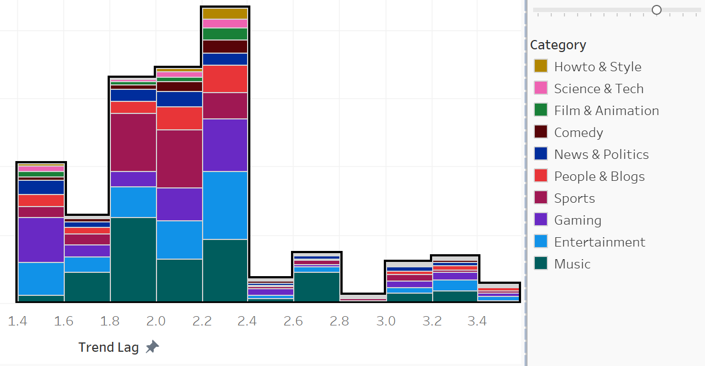

Project Overview
This project explores the dynamics of YouTube videos that go trending. We will be analyzing how the features of a YouTube video influence a video's likelihood to trend. Additionally, we want to assess if these features impact the speed at which a video goes trending. This dashboard provides an interactive look into these questions. I'll also review some of the interesting and more nuanced insights of my work. First lets look at our data.
Data Introduction
YouTube keeps an updating list of the top trending videos on their platform. The trending status is decided by YouTube's algorithm, but essentially the videos are high engagement, and very popular. The dataset is a compilation of these trending videos, from various regions around the world, gathered by Rishav Sharma utilizing the YouTube API. For this project, we'll be looking at U.S. videos published from 2020 to 2024. The data was updated daily and can contain multiple instances of the same video if that video trended for many days. To align with the purpose of determining what facilitates a trending video, we'll only look at the first instance of the videos (when the video first trended). Additionally, to limit the amount of video categories we'll group the 3 least occuring categories (Travel & Events, Pets & Animals, and Nonprofits & Activism) into a category "Other".
The metrics we're most interested in are views, likes, dislikes, and comments. Since these metrics can vary greatly depending on how quickly a video trends, we'll focus on some computed metrics to standardize our analysis;
- Trend Lag: Time it took a video to trend (in days)
- Like Percentage: Likes / (Likes + Dislikes)
- Like View Ratio: Likes / Views
- Like Comment Ratio: Likes / Comments
Scope and Goals
The goals of this project are to:
- Exploring trending video patterns:
- Analyze trend lag distributions across categories and video attributes.
- Identify categories and channels that are doing well.
- Uncovering what makes a video trend:
- Examine how the metrics like view ratio, comment view ratio, and like percentage affect trend lag.
- Spot the most popular tags amongst trending videos.
- Compare metrics across categories to see how they relate to trending times.

Insights and Findings
The three categories with the most trending videos are gaming, entertainment, and music respectively. Gaming and entertainment both have median likes around 30k, while music boast the highest at 54k. Sports has the 2nd least median likes (least is News and Politics) despite it being the fourth most popular category. There's multiple factors affecting like variation but the main one is trend lag. A video that trends a week after being published is usually going to have more likes than a video that trends the same day because it'll have more chance for engagement. There are also category specific factors; sports videos are likely to trend quicker since videos are often covering recent/ongoing games. Sports videos may also be susceptible to more dislikes, as opposed to likes, depending on the outcome of game and viewer sentiment. The bubble chart was filtered to show the 6 most popular categories.
Now lets look at which channels accumulated the most trending videos, as well as which categories are most prevalent for these channels. We'll use the term "super trender" to describe these channels. Sports channels dominate the top, with just the NFL and NBA accounting for over 800 videos. Next we see a mix of gaming, entertainment/comedy, and science channels in the top 10. As we touched on before, sports channels are likely to be posting updates and content about live or recent games/events. This means sports fans will be quick to tune in and watch the highlights, recaps, interviews, etc. As a result, sports channels are prevalent in the top 30.
When we go down to the top 20-30, there's some diversification to music and film, though sports, entertainment, and gaming still dominate (also seen in our bubble chart). Each channel in this group has 84-100 videos that went trending. So, what categories are doing the best and why? Looking at the top 30 super trenders, only 7 of the 13 categories show up (excluding other and how to & style since they only occur in 1 video each). Comedy only occurs because Saturday Night Live is an entertainment comedy fusion, and both film and science are each represented by one channel each. In short, sports, gaming, entertainment, and music all have substantial representation in the top 30 super trenders. Yes, these categories are performing the best, but it isn't just because people only care about these categories. The channels themselves, as well as their fan base, plays a more crucial role. Just browsing through the channels names, we can conclude all these channels have been around for many years. They're also consistently uploading content that people want to watch, and people are doing just that. Additionally, they're often well placed channels in their niche; their content isn't found anywhere else, and if it is, their's is the best around. For example, SpaceX posts rocket launch videos, flight tests, mission updates, etc. and if you're interested in that content, you don't have many other options. The Game Theorists, First We Feast, Dude Perfect, MrBeast, are similar in that they're all dominating their content niche. Once they build up a big fan base on loyal viewers, they can essentially farm trending videos. Next we'll look at trend lag.
We'll filter for the top 10 categories for the sake of easier observation.
This histogram (below) represents the trend lag distribution of about 40k videos that went trending within about 31 hours. The most prominent category in this group was gaming, followed by entertainment, then music.Only about 2200 videos went trending within 2 hours of being published, sports and music accounted for nearly half of these. We've talked about why for sports, and it's likely a similar reason for music. Fans are likely following the release dates of music and are tuning in as soon as videos are published. Gaming and entertainment dominate for videos that trended 5-12 hours after being published. We can assume this is when the fan bases of these channels are tuning in. For example, if a video is published in the morning it needs some time to get exposure throughout the day before trending. There are very few videos that trend 14-17 hours after being published since this is going to be when most viewers are sleeping or just waking up. The majority of videos go trending 24 hours after being published, give or take a few hours, and their doesn't seem to be any notable deviation from the distribution of categories.

The chance of trending seems to heavily drop off past 31 hours. This trend lag distribution (left) only represents about 4k videos which when trending in 2-3 days. The most prominent categories shift, with music now at the front, followed by entertainment, and then gaming. There could be a few reasons for this. Gaming content is often tied with real-time events or updates (new releases or tournaments), this can account for the typically faster trend lag. The consumers of gaming content are likely to be younger and possible gamers themselves, it follows that they consume the content quicker since they're more invested. Additionally, music content usually has a broader appeal and much longer lifespan than gaming content. While die-hard fans may cause immediate trending (seen in theh first histogram), the reach of music content is more likely to grow overtime as people listen and share with friends/family. Music is listened to, not quickly consumed like other content categories, and therefore can take longer to trend. Finally let's look at the interaction metrics.
For this dual axis plot, the average metric is computed from all the videos in that specific trend lag bin(intervals of 0.1). The like percentage for videos that trended within a couple hours is surprisingly low at 97%, though this could be a result of the video having enough time for the likes and dislikes to stabilize before it went trending. It could also mean that the amount of likes to likes and dislikes isn't important, but getting a high volume of them is. However, all of the video groups that trended within 36 hours, despite the aformentioned 0.1 trend lag group, had an average like percentage greater than 99%. After this like percentage drops off, but also become more inconsistent as there are less videos to compute the metric from.
Let's investigate the scatter plot a little more. This time we'll look at the top 10 super trenders only, and color by category. This way we can observe the metrics for both individual videos and popular categories.
Our like view ratio scatter (left) is a little more telling. This shows that sports gets significantly less likes per view compared to the other categories in our top 10 super trenders. Additionally, gaming has a fairly high like to view ratio, followed by entertainment and science/technology. I'd like to explore the categories and metrics more, but it require a more statistical analysis (adding more super trenders clusters the visualization).
Conclusion
The analysis uncovered several key trends and insights regarding factors influencing video trending:
- Trend Lag and Viewer Engagement:
- Shorter trend lags are often associated with higher like and comment/view ratios, suggesting that videos that gain traction quickly tend to have more engaged audiences.
- Like percentages and comment/view ratios display noticeable variations across categories, highlighting differences in audience interaction patterns.
- Category Dominance:
- Categories such as music, entertainment, gaming, and sports consistently dominate trending lists, driven either by their broad audience appeal or loyal fan abses, and frequent uploads by popular creators.
- While other categories may appear less frequently, a quality content creator with niche positioning can crank out trending videos regardless of category.
- Channel Performance:
- Channels with consistent engagement, such as those maintaining a high like/view ratio and frequent interaction in comments, tend to have a higher frequency of trending videos.
- Top-performing channels are likely utilizing effective strategies like timely uploads and audience engagement through comments, and collaboration with other creators.